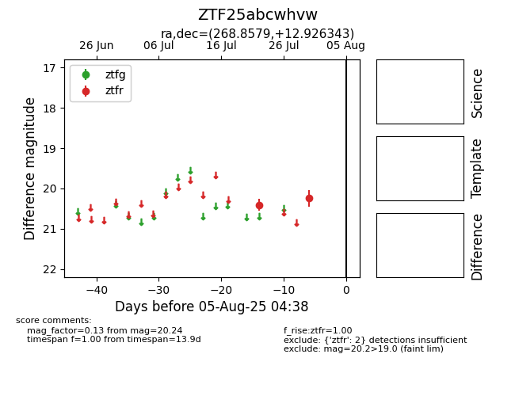

Target ZTF25abcwhvw at 2025-08-05 04:38, see:
FINK: fink-portal.org/ZTF25abcwhvw
Lasair: lasair-ztf.lsst.ac.uk/objects/ZTF25abcwhvw
ALeRCE: alerce.online/object/ZTF25abcwhvw
alt names
ZTF25abcwhvw (ztf,fink)
coordinates:
equatorial (ra, dec) = (268.8579,+12.92634)
galactic (l, b) = (38.4619,+18.17240)
photometry
last ztfr=20.24
2 ztfr detections
